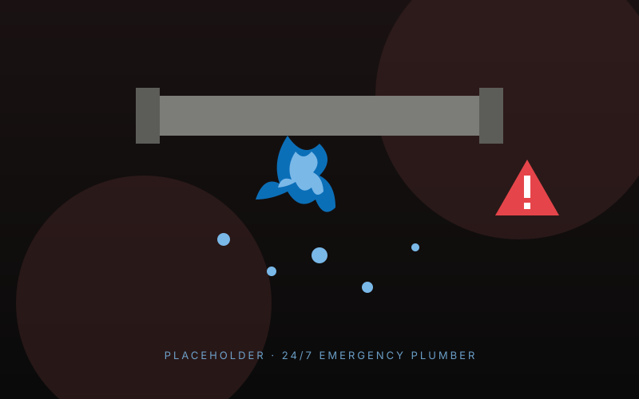

Plumbing emergencies don't keep office hours. A burst pipe at 11pm, no heat on the coldest weekend of the year, a tank leaking through the kitchen ceiling — these are the calls we live for. We run a genuine 24/7 emergency line covering Limerick city, county Limerick, most of Clare and parts of Tipperary. Most call-outs are with you within 60–90 minutes, and we'll always tell you straight if it's something you can hold off until morning.
What's included
- Genuine 24/7 phone line — picked up by a real person, not a call centre
- Fully-stocked emergency van: every common spare, isolation valves, pipe repair kits
- Same-night fix for the vast majority of call-outs
- Honest emergency pricing — quoted on the phone before we travel
- If we can't fix it tonight, we make it safe and book a return visit at no extra call-out fee
The emergencies we get called to most in Limerick
If you're reading this with water coming through the ceiling, scroll to the call-out details at the bottom of the page. Otherwise — these are the most common calls we take.
Burst pipe
Most common in cold snaps after a thaw. Step one: turn off the mains stopcock (usually under the kitchen sink). Step two: ring us. We'll be there fast.
Leaking hot water cylinder
Often a slow leak that suddenly gets worse. Turn off the water supply to the cylinder and the immersion if you have one. Don't keep using hot water.
No heat or hot water
Could be a pressure drop, a frozen condensate, a pump fault or a board failure. We carry the parts to fix 90% of these on the first visit.
Blocked drain or toilet (overflowing)
Stop using the system, lift any external drain covers if you can, and ring us. Most blockages are clearable on the night.
Gas leak (smell of gas)
Don't ring us first — ring Gas Networks Ireland on 1800 20 50 50. They'll make it safe. Then ring us to repair the leak and reinstate.
Pressure relief valve overflowing
Common on combi boilers. Usually means an expansion vessel issue. We'll get it back working and explain whether it's a quick fix or warning of bigger problem.
How much does an emergency plumber cost in Limerick?
We're upfront on the phone, every time. Standard emergency call-out (evenings and weekends within Limerick city): €90 call-out + €75/hour labour. After midnight or on bank holidays: higher rate, but we'll tell you exactly what before we travel. Most emergencies are resolved in 1–2 hours of labour plus parts. We don't pad jobs and we don't drag out repairs — your trust is worth more to us than the extra hour.
What you can do before we arrive
First, turn off the water at the mains stopcock — it's usually under the kitchen sink, and turning it clockwise stops the supply. For a leaking cylinder, also turn off the cold supply going in (usually a valve on top). For any electrical proximity to water, switch the affected circuit off at the consumer unit. Then put a bowl down, a towel on the floor, and ring us. If you're not sure what to turn off, ring us anyway and we'll talk you through it.
Frequently asked questions
How fast can you actually be here?
In Limerick city, most call-outs are with you in 30–60 minutes. Castletroy, Raheen, Dooradoyle, Caherdavin: 30–45 minutes typically. Ennis, Shannon, Adare, Nenagh: 45–75 minutes. We'll always give you a real ETA on the phone.
Do you really answer the phone at 3am?
Yes — the emergency line goes to a phone in the house. If we're already on a call-out, we'll get back to you within 15 minutes.
Will I pay more for a Saturday or weekend call-out?
Yes, slightly. Saturday daytime is normal rates. Saturday evening, Sunday, and bank holidays are higher. We'll quote you on the phone before we move.
What if you can't fix it tonight?
We make it safe (turn off water, isolate the gas, etc.) so the property isn't at risk, then book a return visit at no further call-out fee. Genuine emergencies first, then a proper fix in daylight if needed.
Should I ring you or my insurance first?
Stop the damage first — ring us. Most home insurance policies in Ireland cover emergency plumber call-outs (it's worth checking your policy). We can give you a written invoice for any claim.
Areas we cover for emergency plumber
We cover all of Limerick city and county, most of Clare and into north Tipperary. Some popular areas: